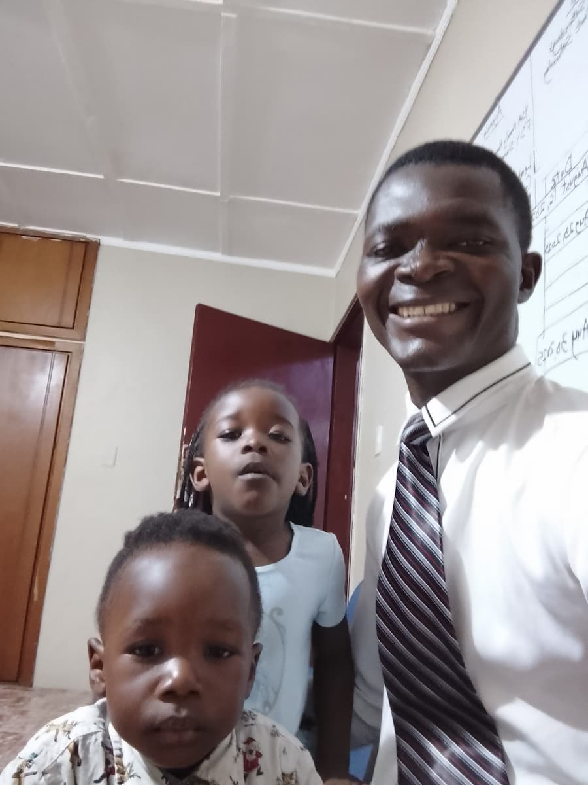

Moses Kracar-Tee Norris | WDD 130
My name is Moses Kracar-Tee Norris. I am from Liberia the western part of Africa. I am proud student of the Brigham Young University Idaho. I am a member of the Church of Jesus Christ Of Latter-Day Saints. I served as a fulltime missionary in the Nigeria Calabar Mission. I served in the mentioned from 2012 December to 2014 December respectively. I am pursuing a degree in System Administration. One thing I would like to say is that Online studies is not as easy as one may think. Currently, I am working fulltime as an IT Support Supervisor at a hospitality industry. I live in different state or county, and work in different state or county as well. The distance to travel from home to work is about 2 hours drive on commercial vehicles, and it is about 1 hour 30 minutes on private vehicle. I am a businessman by nature. Knowing you is a privilege.
I am blessed with these two beautiful kids. I love them very much. They always make me talk and laugh.